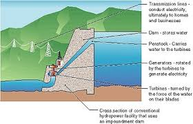
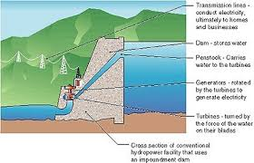
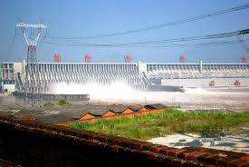
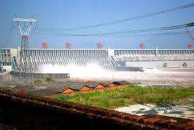
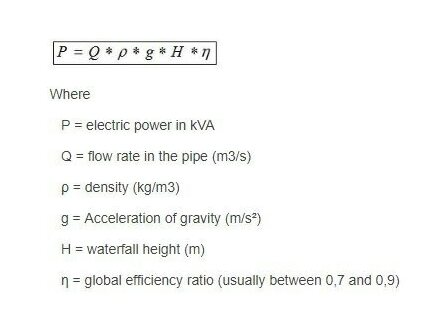

Hydropower is energy in moving water
People have a long history of using the force of water flowing in streams and rivers to produce mechanical energy. Hydropower was one of the first sources of energy used for electricity generation and is the largest single renewable energy source for electricity generation in the different countries
Hydropower relies on the water cycle
Understanding the water cycle is important to understanding hydropower. The water cycle has three steps:
- 1.Solar energy heats water on the surface of rivers, lakes, and oceans, which causes the water to evaporate.
- 2.Water vapor condenses into clouds and falls as precipitation—rain and snow.
- 3.Precipitation collects in streams and rivers, which empty into oceans and lakes, where it evaporates and begins the cycle again
The amount of precipitation that drains into rivers and streams in a geographic area determines the amount of water available for producing hydropower. Seasonal variations in precipitation and long-term changes in precipitation patterns, such as droughts, have a big impact on hydropower production.
power is produced with moving water
Because the source of hydroelectric power is water, hydroelectric power plants are usually located on or near a water source. The volume of the water flow and the change in elevation (or fall) from one point to another determine the amount of available energy in moving water. Swiftly flowing water in a big river, such as the Columbia River that forms the border between Oregon and Washington, carries a great deal of energy in its flow. Water descending rapidly from a high point, such as Niagara Falls in New York, also has substantial energy in its flow.
Hydropower is one of the oldest sources of energy for producing mechanical and electrical energy. Hydropower was used thousands of years ago to turn paddle wheels to help grind grain. Before steam power and electricity were available in the United States, grain and lumber mills were powered directly with hydropower. The first industrial use of hydropower to generate electricity in the United States occurred in 1880, when 16 brush-arc lamps were powered using a water turbine at the Wolverine Chair Factory in Grand Rapids, Michigan. The first U.S. hydroelectric power plant opened on the Fox River near Appleton, Wisconsin, on September 30, 1882. Most U.S. hydroelectricity is now produced at large dams on major rivers, and most of these hydroelectric dams were built before the mid-1970s.
.jpg "hydropower") 

.jpg "hydropower") 


Before embarking on any hydro power generation project it is essential to survey the
proposed site to
calculate the amount of available hydro power.
Hydropower or hydroelectricity refers to the conversion of energy
from flowing water
into
electricity. It is considered a renewable energy source because the water cycle is constantly
renewed by the sun[1].
Historically, one of the first uses of hydro power was for mechanical milling, such as grinding
grains[2]. Today, modern hydro plants produce electricity using turbines and generators, where
mechanical energy is created when moving water spins rotors on a turbine. This turbine is
connected
to an electromagnetic generator, which produce
electricity when the turbine
spins.
- Impoundment facilities are the most common technology which uses a dam to create a large reservoir of water. Electricity is made when water passes through turbines in the dam.
- Pumped storage facilities are similar but have a second reservoir below the dam. Water can be pumped from the lower reservoir to the upper reservoir, storing energy for use at a later time
- Run-of-river facilities rely more on natural water flow rates, diverting just a portion of river water through turbines, sometimes without the use of a dam or reservoirs. Since run-of-river hydro is subject to natural water variability, it is more intermittent than dammed hydro.
Formula to calculate hydropower
How to calculate output power of a hydroelectric turbine? The simplest formula is : 
Types of Hydropower Plants
There are three types of hydropower facilities: impoundment, diversion, and pumped storage. Some hydropower plants use dams and some do not. The images below show both types of hydropower plants. Many dams were built for other purposes and hydropower was added later. In the United States, there are about 80,000 dams of which only 2,400 produce power. The other dams are for recreation, stock/farm ponds, flood control, water supply, and irrigation. Hydropower plants range in size from small systems for a home or village to large projects producing electricity for utilities. The sizes of hydropower plants are described below.
The most common type of hydroelectric power plant is an impoundment facility. An impoundment facility, typically a large hydropower system, uses a dam to store river water in a reservoir. Water released from the reservoir flows through a turbine, spinning it, which in turn activates a generator to produce electricity. The water may be released either to meet changing electricity needs or to maintain a constant reservoir level.
Another type of hydropower called pumped storage works like a battery, storing the electricity generated by other power sources like solar, wind, and nuclear for later use. It stores energy by pumping water uphill to a reservoir at higher elevation from a second reservoir at a lower elevation. When the demand for electricity is low, a pumped storage facility stores energy by pumping water from a lower reservoir to an upper reservoir
energy and installation capacity of the power plant
Enter the following boxes to calculate the power output of the hydroelectric power and the capacity to install the power plant:
headFlowrate
Efficiency
Density
Gravitational
Time interval
Installation capacity
Productive energy
Calculate the installation capacity and amount of energy and peak energy in different months
January :head Flowrate
Febuary:head Flowrate
March:head Flowrate
April:head Flowrate
May:head Flowrate
June:head Flowrate
July:head Flowrate
August:head Flowrate
September:head Flowrate
October:head Flowrate
November:head Flowrate
December:head Flowrate
Efficiency Density
Gravitational
January:Installation capacity Productive energy
Febuary:Installation capacity Productive energy
March:Installation capacity Productive energy
April:Installation capacity Productive energy
May:Installation capacity Productive energy
June:Installation capacity Productive energy
July:Installation capacity Productive energy
August:Installation capacity Productive energy
September:Installation capacity Productive energy
October:Installation capacity Productive energy
November:Installation capacity Productive energy
December:Installation capacity Productive energy
Productive energy max
Parts of a Hydroelectric Plant
- Dam. Raises the water level of the river to create falling water. Also controls the flow of water.
- Turbine. The force of falling water pushing against the turbine's blades causes the turbine to spin. A water turbine is much like a windmill, except the energy is provided by falling water instead of wind. The turbine converts the kinetic energy of falling water into mechanical energy.
- Generator. Connected to the turbine by shafts and possibly gears so when the turbine spins it causes the generator to spin also. Converts the mechanical energy from the turbine into electric energy. Generators in hydropower plants work just like the generators in other types of power plants
- Transmission lines. Conduct electricity from the hydropower plant to homes and business
How Much Electricity Can a Hydroelectric Plant Make?
- How Far the Water Falls. The farther the water falls, the more power it has. Generally, the distance that the water falls depends on the size of the dam. The higher the dam, the farther the water falls and the more power it has. Scientists would say that the power of falling water is "directly proportional" to the distance it falls. In other words, water falling twice as far has twice as much energy.
- Amount of Water Falling. More water falling through the turbine will produce more power. The amount of water available depends on the amount of water flowing down the river. Bigger rivers have more flowing water and can produce more energy. Power is also "directly proportional" to river flow. A river with twice the amount of flowing water as another river can produce twice as much energy.
By taking advantage of gravity and the water cycle, we have tapped into one of nature's engines to create a useful form of energy. In fact, humans have been capturing the energy of moving water for thousands of years. Today, harnessing the power of moving water to generate electricity, known as hydroelectric power, is the largest source of emissions-free, renewable electricity in the United States and worldwide. Although the generation of hydropower does not emit air pollution or greenhouse gas emissions, it can have negative environmental and social consequences. Blocking rivers with dams can degrade water quality, damage aquatic and riparian habitat, block migratory fish passage, and displace local communities. The benefits and drawbacks of any proposed hydropower development must be weighed before moving forward with any project. Still, if it's done right, hydropower can be a sustainable and nonpolluting source of electricity that can help decrease our dependence on fossil fuels and reduce the threat of global warmin
On Earth, water is constantly moved around in various states, a process known as the hydrologic cycle. Water evaporates from the oceans, forming into clouds, falling out as rain and snow, gathering into streams and rivers, and flowing back to the sea. All this movement provides an enormous opportunity to harness useful energy. In 2011, hydropower provided 16 percent of the world’s electricity, second only to fossil fuels. Worldwide capacity in 2011 was 950 gigawatts (GW), with 24 percent in the China, eight percent in the United States, and nine percent in Brazil [1]. Globally, hydroelectric capacity has more than doubled since 1970. In the United States, hydropower has grown steadily, from 56 GW of installed capacity in 1970 to more than 78 GW in 2011 [2]. However, as a percentage of total U.S. electricity generation, it has fallen from 12 percent in 1980 to 7 percent in 2012, largely as a result of the rapid growth in natural gas power plants and other renewable energy technologies such as wind and solar [3].
Since hydropower depends on rivers and streams for generation, the potential to use hydropower as a source of electricity varies across the country. For example, the Pacific Northwest (Oregon and Washington) generates more than two-thirds of its electricity from hydroelectric dams [4]. The Grand Coulee dam on the Columbia River in Washington is one of the largest dams in the world, with a capacity of more than 6,750 megawatts (MW). In addition to very large plants in the western states, the United States has many smaller hydropower plants. In 1940 there were 3,100 hydropower plants across the country, though by 1980 that number had fallen to 1,425. Since then, a number of these small plants have been restored; as of 2013, there were 1,672 hydro plants (not including pumped storage) in operation [5]. These plants account for only a tiny fraction of the dams that block and divert our rivers.
In order to generate electricity from the kinetic energy in moving water, the water has to move with sufficient speed and volume to spin a propeller-like device called a turbine, which in turn rotates a generator to generate electricity. Roughly speaking, one gallon of water per second falling one hundred feet can generate one kilowatt of electricity. To increase the volume of moving water, impoundments or dams are used to collect the water. An opening in the dam uses gravity to drop water down a pipe called a penstock. The moving water causes the turbine to spin, which causes magnets inside a generator to rotate and create electricity. There are a variety of types of turbines used at hydropower facilities, and their use depends on the amount of hydraulic head (vertical distance between the dam and the turbine) at the plant. The most common are Kaplan, Francis, and Pelton wheel designs. Some of these designs, called reaction and impulse wheels, use not just the kinetic force of the moving water but also the water pressure.
The Kaplan turbine is similar to a boat propeller, with a runner (the turning part of a turbine) that has three to six blades, and can provide up to 400 MW of power. The Kaplan turbine is differentiated from other kinds of hydropower turbines because its performance can be improved by changing the pitch of the blades. The Francis turbine has a runner with nine or more fixed vanes. In this turbine design, which can be up to 800 MW in size, the runner blades direct the water so that it moves in an axial flow [6]. The Pelton turbine consists of a set of specially shaped buckets that are mounted on the outside of a circular disc, making it look similar to a water wheel. Pelton turbines are typically used in high hydraulic head sites and can be as large as 200 MW.
Web PoliciesPrivacyNo Fear ActWhistleblower ProtectionInformation QualityOpen GovAccessibility
Citation
This page can be cited as Engineering ToolBox, (2008). Hydropower. [online] Available at: https://www.engineeringtoolbox.com/hydropower-d_1359.html [Accessed Day Mo. Year]. STAY CONNECTED
- Telegram:@omid20
- Instagram:__omid21
Website@Calculation of Hydro Power omidmohammadi9124@gmail.com References Wikimedia Commons. (August 31, 2015). Ingur Hydroelectric Facility [Online]. Available: https://commons.wikimedia.org/wiki/File:Ingur_Hydroelectric_Power_Station.jpg Missouri Botanical Garden. (August 31, 2015). Hydroelectric Power [Online]. Available: http://www.mbgnet.net/fresh/rivers/dams.htm Hydro Quebec. (September 1, 2015). Retaining Structures [Online]. AvailabFle: http://www.hydroquebec.com/learning/hydroelectricite/ouvrages-retenue.html Canadian Dam Association. (December 29, 2015). Dams in Canada [Online]. Available: